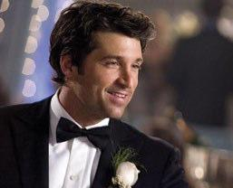
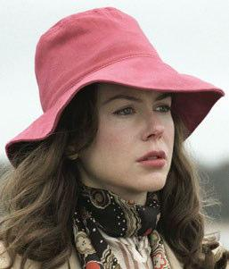
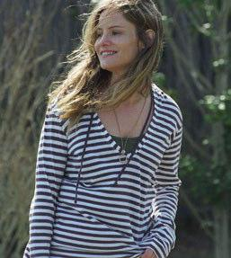

In Made of Honor, best friends Tom (Patrick Dempsey) and Hannah (Michelle Monaghan) are opposites when it comes to love. She’s ready to settle down but can’t find “the one”. And Tom is a “serial dater ” and sworn bachelor. Hannah goes to Scotland on a six-week business trip, giving Tom time to realise she is Ms Right. So, when Hannah comes back engaged to another man, Tom sets out to steal her back and stop the wedding. ✪
Dempsey was nominated in 2007 for a Golden Globe for his ongoing role as neurosurgeon Derek Sheperd in the hit TV series Grey’s Anatomy. Before landing the part, he auditioned to play Dr Gregory House of House. Off-screen, he founded the Patrick Dempsey Center for Cancer Hope and Healing in his home town in Maine; he’s a true caregiver.
Director JJ Abrams cast Monaghan for Mission: Impossible III 20 minutes after viewing her audition tape. It was her first major role, and she’s been hot ever since. She studied journalism at Columbia, but dropped out to pursue a modelling career. Monaghan is from a town in Iowa so small they don’t even have movie billboards, she says.
Margot at the Wedding takes a look at dysfunctional family ties. Narcissistic author Margot (Nicole Kidman) is estranged from sister Pauline (Jennifer Jason Leigh). She shows up for Pauline’s wedding, out of selfish desires to escape her own marriage and see an ex-lover. As usual, Margot begins to destroy everything and everyone around her, including her sister’s relationship. ✪
Kidman was honoured by the United Nations in 2004 as a “Citizen of the World.” A philanthropist, she does charity work and creates awareness for impoverished children worldwide. She's one of Hollywood’s highest-paid actresses. Her extensive filmography includes Moulin Rouge, which was her debut as a singer.
Once called the “greatest working actress in America,” Leigh’s extensive acting career began at the age of nine. She dropped out of high school at 16 to act full time. She is known for in-depth character studies for her roles. “I’d much rather be in a movie that people have really strong feelings about than one that makes a hundred million dollars but you can’t remember because it’s just like all the others,” she once said.
Destination weddings involve having a wedding in an unusual place. Here are a few examples: A safari wedding in an incredible African bush setting. Getting married while skydiving - the preacher will marry you while in the plane. After your first kiss, you jump out of the plane, falling at over 100 kph. Your guests can jump with you, or wait on the ground with the lowers and champagne. Tying the knot on a glacier in Juneau, Alaska.
As part of the package, you can go on a helicopter tour with several guests to see nearby glaciers. The actual ceremony takes place on the glacier. The couple celebrate it afterwards with a walk on the ice. A wedding at 13th century Auchen Castle in Scotland. Trained birds of prey swoop down to deliver the rings, as Scottish pipers accompany the ceremony. How exciting! ✪